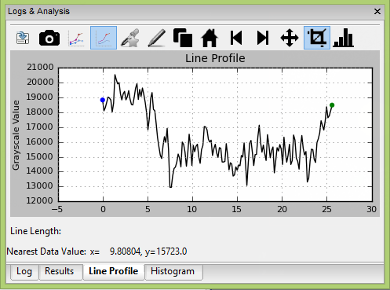
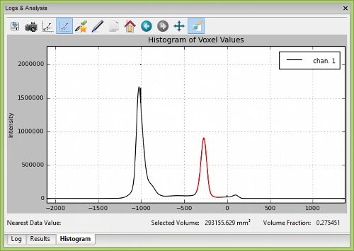

Simple Analysis Tools
Point (1D)
At any time while the mouse cursor is over the volume, the coordinates
and gray-scale value will appear in the bottom left-hand corner of the
3D viewport. You can change between displaying coordinates in mm or
pixels, in MicroView's application settings dialog
(Edit → Application Settings...).
Line (2D)
A line segment can be selected for analysis by performing the following steps:
- Position the mouse cursor over an image in any of the viewports.
- Press the 1 key to mark the beginning of the line.
- Press the 2 key to mark the end of the line.
- or -
- Select
Edit→Show Lineto display a line in the center of the image immediately
Green and blue markers will be drawn in the 3D viewport, indicating the beginning and ending of the line, respectively. The marks can be dragged interactively about each viewport by selecting the marker using the middle button. Re-select the endpoints at any time by pressing either of the 1 and 2 keys. Clear the line by pressing the y key.
Once a line segmented has been selected, use any of the following hotkeys to perform a 2D analysis:
2D Keyboard Hotkeys
| HotKey | Result |
|---|---|
| a | Saves the end-points of the line tool, and gray-scale values measured along the selected line to a text file. |
| p | Plots the gray-scale values along the selected line. |
| y | Removes the line from the viewport. |
Volume (3D)
Select a 2D or 3D region of interest (ROI) using any of MicroView's ROI tools. Once a ROI is selected, use any of the following hotkeys to perform 2D/3D analysis:
3D Keyboard Hotkeys
| Hot Key | Result |
|---|---|
| c | Removes the active ROI from the screen. |
| g | Plots the histogram of the gray-scale values within the ROI. |
| m | Calculates the mean and standard deviation of the gray-scale values within the ROI. |
| s | Saves the boundary coordinates of the standard ROI to a file. |
| v | Saves the ROI to an image file. |
| d | Saves the gray-scale values to a text file. Selection region must be two dimensional. |
| u | Saves the area to an image file (2D ROI selection only). |
| Del | Sets voxel values, within the currently defined ROI to a user-defined value (defaults to zero). Use this key to mask out regions of an image. |
| Shift+Del | Sets voxel values, outside the currently defined ROI to a user-defined value (defaults to zero). Use this key combination to mask out everything outside a ROI. |
Line Profile Window
Overview

MicroView can plot a profile of pixel data along a user-defined line. First, select the start and end points of the line, then press the p key to plot the data profile.
Interacting with the Plot Window
Use the left mouse button to interactively click and drag a region of
interest in order to zoom in on the plotted data. Multiple levels of
zooming can be achieved by repeating the click-and-drag method. Zoom out
by clicking with the right mouse button. Reset the plot window by
clicking the Reset button at the bottom of the plot window, selecting
View → Reset, or by pressing the r key.
Optionally display symbols over each data point, by selecting
View → Symbols.
Measurements along the 2D pixel profile may be made by positioning the mouse cursor over a feature within the plot window and pressing the 1 key, then selecting a second feature and pressing the 2 key. A horizontal red line will be drawn between the two features. Once drawn, the endpoints can be moved, either by using the 1/2 key combination, or by adjusting the endpoint values in the editable text fields below the plot area. Mouse cursor position and selected line length are displayed in the bottom center of the plot window. This feature is particularly useful for measuring full-width half-max (FWHM) distances on peaks in a unbiased, systematic fashion.

Saving data
The plot window data can be exported to disk in one of two ways:
Select File→Save Data...to save the line profile to disk in a simple text formatSelect File→Save Snapshot...to save a screen capture of the plot window to one of a number of common image file formats
 Histogram Window
Histogram Window

MicroView can plot a histogram of pixel values within a 2D or 3D ROI. To plot a histogram of data, first select a ROI, then press the g key to activate the histogram window. The control of the histogram window is similar to the control of the 2D profile plot window.
The histogram window has the following additional features:
- The Auto Threshold button can be used to automatically determine an optimal threshold value for use in the isosurface tool or Advanced Bone Analysis application. The value will be selected using the method of Otsu. A red arrow will be displayed on the x-axis of the plot after hitting this button, indicating the threshold value. In addition, the window/level settings in MicroView will be adjusted to reflect this threshold value, as a convenience.
- The user can selectively interrogate a range of data within the
histogram. For this selected range of values, the total number of
voxels in the selected range and corresponding volume fraction are
reported. To select a range of voxel values, place the cursor on the
graph in the plot window and press the middle mouse button. Drag the
mouse and release the button once the desired range of voxel values
have been highlighted, in red. Check the
Highlight selected regioncheckbox to adjust the image display in the 3D and all 2D viewports of the main window, so that voxels corresponding to the selected value range will be highlighted. - Selected ranges can be converted to an active ROI by first
highlighting a region, as described above, then clicking the
Highlight→ROI button. The highlighted red region will become yellow, indicating that the selected values are now the active ROI. - The user can select different bin sizes for the histogram. Select
from one of the menu entries under
Options→Bin Sizeto adjust the bin size.